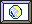
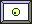
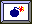
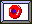
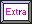
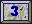
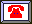
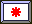
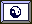

YaAC - Yet another Arcanoid Clone - ist wie der Name schon sagt ein Breakout bzw. Arcanoid artiges Spiel. Alles was zu tun ist, ist mit dem Schläger den Ball gegen die Steine zu schlagen, die sich dann nach einem oder auch mehreren Treffern auflösen. Ein Level ist beendet wenn keine Steine mehr übrig sind.Der Schläger wird mit der Maus bewegt. Je härter (schneller) man schlägt desto größer ist auch die Beschleunigung des Balles. Eigentlich ganz einfach, wenn da nicht noch ein paar Fallstricke eingebaut wären....
This program is free software; you can redistribute it and/or modify it under the terms of the GNU General Public License as published by the Free Software Foundation; either version 2 of the License, or (at your option) any later version.
YaAC ist Open Source unter der GNU General Public License. Um YaAC zu rekompilieren benötigen Sie Delphi (ab Version 3) und die DGC Komponenten. Für die Mausroutinen habe ich die Unit DirectInputAS des DISimpleDemos von Arne Schäpers verwendet, die bei Delphi-Jedi erhältlich sind.
Die Hintergrundbilder wurden erstellt mit Harm's sTile99
YaAC 1.0- Das Spiel selbst
YaAC Leveleditor - Der wird gebraucht um eigene Level zu erstellen. Achtung : Der Leveleditor befindet sich noch in einem frühen Betastatus, ist aber durchaus schon verwendbar.
Einfach die Dateien YAAC.EXE und YAAC.HCL in ein beliebiges Verzeichnis kopieren und schon kanns losgehen.
Leider ist das Spiel recht anspruchsvoll was die Hard und Softwareaustattung des Rechners anbelangt (wenn ich bedenke das BOLO auf dem Atari ST mit 8 MHz und 512 kB Speicher lief). Ein Pentium 200 sollte es schon sein mit Windows 9x oder 2000 und DirectX 6.1. Eine Soundkarte ist unbedingt erforderlich und die Grafikkarte muß 640 x 480 in 16 Bit Highcolor aulösen können. Ach ja eine Maus ist auch notwendig.....
Der Schläger wird mit der Maus geführt (noch Fragen?).
Mit der Taste "N" startet man ein neues Spiel, mit "S" kann man das Spiel speichern (allerdings nur in welchem Level man sich grade befindet und den Punktestand), mit "L" lädt man ein gespeichertes Spiel, mit "P" verschafft man sich ne kleine Pause, "Z" zeigt die Highscoreliste und mit "ESC" wird das Spiel ohne irgendwelche lästigen Nachfragen beendet. "K" zerstört den Ball (falls sich der Ball in irgendeiner Ecke verfangen hat). Cheats gibts natürlich auch aber veraten will ich sie nicht.
 Die Anzahl
der Verbleibenden Bälle wird unten am Bildschirm angezeigt.
Die Anzahl
der Verbleibenden Bälle wird unten am Bildschirm angezeigt.
 Oben links in
der Ecke wird angezeigt welche Schwerkraft in dem Level herscht. das Kann
sein 0 also Schwerelosigkeit (wie es ja auch aus dem klassischen Breakout
bekannt ist) 5 G also eine recht geringe Schwerkraft, 10 G (das entspricht
von Gefühl her etwa der normalen Erdbeschleunigung) und 20 G. Manchmal
kann es allerdings vorkommen, dass die Schwerkraft von Zeit zu Zeit Richtung
und Stärke ändert (ersichtlich an dem Fragezeichen).
Oben links in
der Ecke wird angezeigt welche Schwerkraft in dem Level herscht. das Kann
sein 0 also Schwerelosigkeit (wie es ja auch aus dem klassischen Breakout
bekannt ist) 5 G also eine recht geringe Schwerkraft, 10 G (das entspricht
von Gefühl her etwa der normalen Erdbeschleunigung) und 20 G. Manchmal
kann es allerdings vorkommen, dass die Schwerkraft von Zeit zu Zeit Richtung
und Stärke ändert (ersichtlich an dem Fragezeichen).
Angenehm ist es natürlich wenn alle Punkte doppelt, dreifach oder vierfach gezählt werden.
Desweiteren kann man in der oberen Bildschirmzeile noch seine ereichten Punkte sehen, und das Level in dem man sich gerade befindet.
Jede Art von Steinen hat so ihre Eigenarten. manche sind massiv, andere zerbrechen beim ersten Kontakt, und wieder andere muss man ein paarmal treffen damit sie verschwinden. Steine können Aktionen auslösen, z.B. die Schwerkraft auf eine andere Stärke umschalten, den Ball beschleunigen oder verlangsamen, die Grösse des Balls oder Schlägers ändern, explodieren und vieles mehr. Eine Steinart kann nur vom Schläger zerstört werden, bei anderen Steinen ist ein Kontakt unbedingt zu vermeiden. Magnetsteine ziehen den Ball an und Teleporter versetzen ihn an eine andere Stelle.
In einigen der höheren Level entwickeln die Steine auch ein reges Eigenleben (das ist hier wörtlich zu nehmen, der Algorithmus ist nämlich der vom guten alten LIVE). Da kann es schon mal schwierig werden die ein oder andere Konstellation aufzulösen, da alle 0,7 Sekunden die nächste Generation heranwächst.
| Der einfache Stein. Keine Besonderen Effekte er zerbricht beim ersten Kontakt mit dem Ball | |
| Solider Stein. Er kann nicht zerstört werden. | |
| schaltet die Schwerkraft ab | |
| moderate Schwerkraft an | |
| Normale Schwerkraft | |
| Hohe Schwerkraft | |
| Alle Punkte werden einfach gezählt | |
| Ab jetzt werden alle Punkte doppelt | |
| ..dreifach | |
| .. und vierfach gezählt | |
| Die Schwerkraft wird schwer berechenbar, da sie mal nach hier oder da wirkt... | |
| Der Schläger schrumpft, aber keine Panik er kommt wieder. | |
| Dieser Stein kann nicht mit dem Ball sondern nur mit dem Schläger selbst zerstört werden. | |
|  | Der Ball wird groß |
| mittel | |
|  | und wieder klein |
|  | Dieser Stein explodiert beim Berühren, hüte Dich vor den Trümmern |
|  | Hier wird ein kleiner Rotor freigesetzt der deinen Schläger zu Kleinholz verarbeitet |
| Abwärts, gehts nach der Berührung dieses Steines | |
|  | Extrabälle sind begehrt und werden manchmal auch dringend benötigt |
| 1 Treffer und der Stein wird zu einem einfachen Stein | |
| 2 Treffer notwendig | |
|  | 3... |
| Eine Berührung mit dem Schläger ist bei diesem Stein nicht anzuraten | |
| Hier gehts ein Level abwärts | |
| und hier eins rauf, egal wieviele Steine noch vorhanden sind | |
| eine kräftige Beschleunigung nach links | |
| Noch ist dieser Magnet nicht aktiv | |
| Dieser Magnet übt eine große Anziehung auf den Ball aus | |
|  | Anruf! |
| Hier ist noch unsicher was draus wird, oder wieviele Punkte es für einen Treffer gibt. | |
| Aus Eins mach Drei. -- Und wie jongliere ich mit all den Bällen??? | |
| da warens nur noch einer. | |
| Verlangsamt Ball und Schläger | |
|  | Here comes the Sun, begleitet von einem Totenkopf |
| Uuups wo ist er denn? Der Ball wird zu einem anderen der Teleportsteine gebeamt. | |
|  | Hier gibt es einen größeren Schläger. |
Ja es gibt welche (da bin ich mir ganz sicher), sie sind bloß meiner Qualitätskontrolle entwischt. Falls jemand einen findet dann bitte eine E-Mail an mich!
Das Umschalten auf eine andere Applikation kann manchmal zum Absturz führen. Wenn die Taskleiste auf 'automatisch im Vordergrund' eingestellt ist können manchmal Probleme auftauchen. Als Workaround kann man die einmal mit der linken Maustaste klicken, dann wird die Mausposition wieder auf die Mitte des Bildschirms gesetzt. Wenn keine Soundkarte vorhanden ist stürtzt das Programm mit wildem Gepiepse ab :-(((.
Wie jedes gute Spiel hat auch YaAC seinen eigenen Leveleditor mit welchem man neue, eigene oder verbesserte Levels kreieren kann (und soll).
Die Levels ab 26 sind für solche Level vorgesehen. allerdings sollte man sich vorher sämtliche Level (auch die oberhalb von 27 ) mal angeschaut haben. Teilweise werden da recht nette Effekte präsentiert.
Einfach den Leveleditor aufrufen, YAAC.MAP laden und schon kanns losgehen.
Die Bedienung des Leveleditors sollte einigermaßen intuitiv sein (Ich hab mich dabei an den DGC-Map Editor angelehnt). Zu beachten gibt es allerdings folgende Punkte:
Finger weg vom ersten Level (Index 0), das wird als Startup-Screen gebraucht.
Die erste und letzte Zeile wird von dem Programm für interne Zwecke benutzt. Besser ist zumindest am Anfang diese Zeilen leer zu lassen.
Die erste Zeile wird zum Anzeigen von Statusinformationen genutzt.
In der letzten Zeile werden die verbleibenden Bälle angezeigt, die Steine die dort plaziert werden werden gelöscht.
Es kann immer nur einen aktiven Magneten in einem Level geben. Wird er zerstört wird der nächste inaktive Magnet aktiv.
Große und mittlere Bälle vertragen sich nicht gut mit den Mehrfachbällen.
Es muß in jedem Level ein Ausgangspunkt für den Ball und einer für den Schläger festgelegt werden. Werden keine Ausgangspunkte festgelegt kommt der LIFE-Algorhytmus zum tragen und dann wirds krabbelig.
Bei LIFE-Leveln gilt es zu beachten, das Steine die in Spalte, Zeile, 0 und 19 stehen bei einem Generationenwechsel nicht sterben. Die Positionen 3,4,5 in der ersten Zeile können Sie mit den Steinen besetzen, die die Generationenabfolge vorgibt. Ein leerer Platz ist dabei gleichbedeutend mit einem einfachem Stein.
Möchte man ein Starfield als Hintergrund muß man für das entsprechende Level eine 1 x 1 Pixel große Grafik als Hintergrundimage hinterlegen. (die gibt es schon in Level 0, also einfach an die gewünschte Stelle kopieren. Die Hintergrundbilder und die Animationen werden in der YAAC.HCL Datei gespeichert. Um diese zu verändern benötigt man den DGC HI-COLOR IMAGE LIBRARY EDITOR.
Hier auch der Aufruf an all diejenigen, die sich am Leveldesign versuchen wollen: habt Ihr ein Level erstellt, das euch besonders gut gefällt dann sendet es mir zu, wenn es mir auch zusagt wird es im nächsten Release von YaAC enthalten sein.
Ich betrachte das ganze immer noch als BETA :-) aber zumindest die gröbsten Bugs sind mittlerweise beseitigt. Am Leveldesign ist noch einiges zu tun (Aber dafür gibts ja den Editor).
Meine Stärken liegen eher bei der Programmierung als beim Design und das sieht man dem Spiel streckenweise auch an. Wenn hier jemand eine Idee, oder vieleicht sogar schon fertige Animationen hat, soll er mich bitte kontaktieren
Sounddesign fand bisher fast noch überhaupt keins statt (Ich bin absolut unmusikalisch). Angedacht ist auch die Sounds abhängig von der Geschwindigkeit lauter oder leiser abzuspielen, bzw nach Ort des Auftreffens einen gewissen Stereoeffekt einzubauen.
Es gibt schon Ideen für neue Steine:
Sobald ich mir einen neuen Rechner und einen Kraftrückkoppelungslustknüppel gekauft hab wird auch das angedacht...
Und natürlich neue Level. Bis zu 255 in einer Map Library könnens ja werden.....
Der Möglichkeiten und Pläne gibt es also viele. Ob diese Erweiterungen realisiert werden hängt natürlich hauptsächlich von den Benutzerreaktionen ab. Viel angefragte Erweiterungen haben natürlich die besseren Chancen, bekomme ich kein Feedback bleibt alles so wie es ist.
to be continued....
Christian Ledermann Dezember 2000